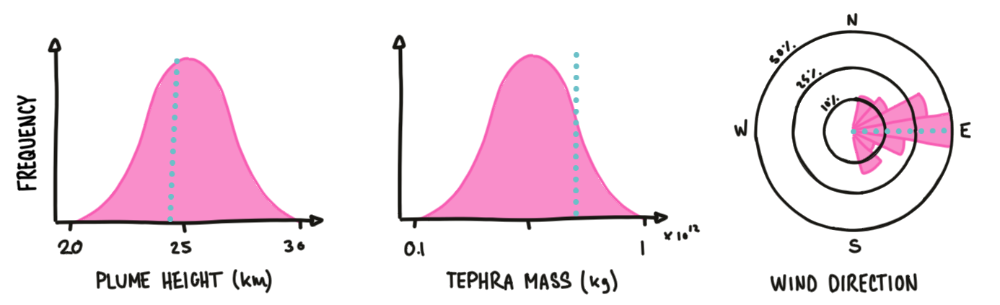
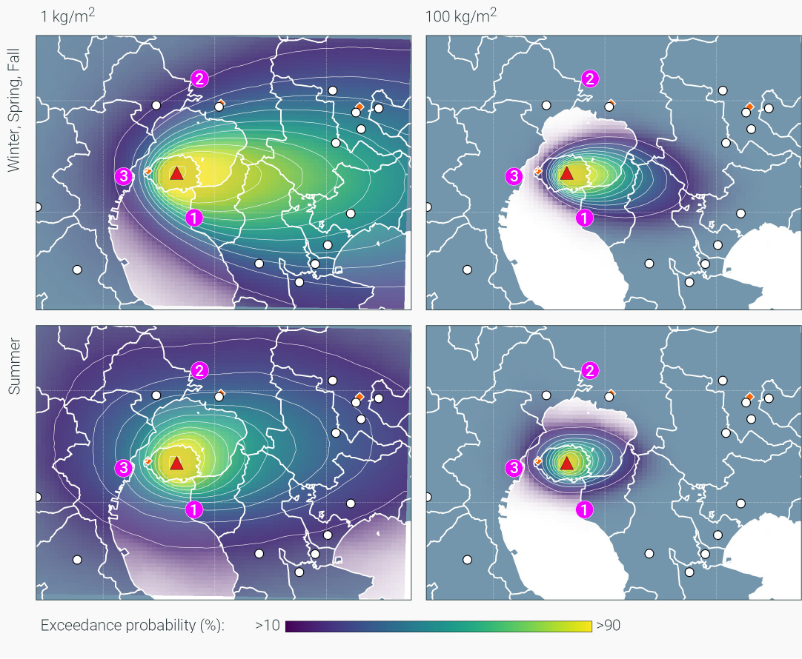

Probabilistic modelling: Part 2
We have previously looked at probabilistic modeling for lava flows, where we accounted for the uncertainty of vent location on hazard quantification. However, probabilistic hazard assessment strategies often have to account for the uncertainty on more than one parameter. This section sets the stage for probabilistic assessment of tephra fallout and digs one step further into the mechanics of probabilistic hazard modeling.
Objectives
- Understand how ESP can be translated into probabilistic eruption scenarios.
- Learn the mechanics of probabilistic hazard modelling for tephra accumulation.
- Review how to compute and display hazard outputs.
Probabilistic hazard modelling
For the sake of this exercise, let's consider a Plinian eruption from Cotopaxi volcano (Ecuador) that occurred ~1200 years ago. By using the workflow previously introduced, we were able to reconstruct the ESP of the eruption1.
Based on this, we were able to estimate that 4.5\(\times 10^8\ m^3\) of tephra were erupted from a 25 km-high plume over ~1h, and that the deposit indeed shows the characteristics of a Plinian eruption23. Based on the volume, this eruption had a VEI of 4.
Great. We now have one reference eruption. But is that sufficient to be used as a representative hazard information for a future eruption of Cotopaxi volcano?
The early days: deposit-based hazard maps
For a long time, reference eruptions have been used as representative of the most likely future behaviour, in which case an isopach map such as Figure 1 was used as the hazard map for tephra accumulation.
What do you think is missing??
Do you think that this approach represents a comprehensive representation of the possible hazard from future eruptions? Why, or why not? What do you think is missing?
Spend some time thinking about these aspects in an intuitive way.
Missing component #1
The Global Volcanism Program of the Smithsonian Institution is a useful database that attempts to compile the eruptive histories of volcanoes that have been active during the Holocene. Let's have a look at the eruptive history of Cotopaxi volcano inferred this database:
What do we see?
- 78 eruptions are recorded in the catalogue.
- VEI vary between 1 and 5, which mean that during its history, eruptions at Cotopaxi volcano have had:
- Plume heights varying between 10's of meters to 10's of km.
- Erupted volumes varying between 10\(^{-5}\) to 10\(^{1}\) km\(^{3}\).
Lesson #1
Using a single isopach map implies that we are considering one realisation of the scope of eruptive behaviour that a given volcanic system is capable of exhibiting.
Missing component #2
The tephra fallout hazard extends in the direction of the dominant wind patterns, which vary in time and space. Let's look at statistics of wind velocity and direction over the past 15 years at a given volcano:

What do we see?
- Between the dry and the rainy seasons, the wind direction at this specific volcano can shift by 180 degrees.
- The rainy season is characterised by lower wind velocities.
Lesson #2
Using a single isopach map implies that we are considering one realisation of the possible atmospheric patterns in which a future eruption could occur.
As a summary, the previous lesson has provided us with a methodology to predict tephra accumulation, but we need to be able to account for the inherent variability of ESP when quantifying the associated hazard.
Probabilistic eruption scenarios
Probabilistic hazard modelling for tephra fallout follows the same general philosophy compared to what we adopted for lava flows with two notable differences.
-
Model input → For lava flows, we used a non-physical model. As a consequence, we explored the uncertainty associated with vent location and the DEM rather than physical properties - or, in other words, ESP. Input parameters to
Tephra2are, however, physical ESP, and the aim of the probabilistic modelling approach for the tephra hazard will be to explore a range of possible eruption conditions for a future event. -
Model output → For lava flows, the output of one single run consisted of a boolean inundation/no inundation condition, and the probabilistic approach quantified a likelihood of pixel inundation by a lava flow. Conversely, the output of a single
Tephra2run is a hazard intensity, namely a mass accumulation per surface area (\(kg/m^2\)). The probabilistic approach will therefore help us to quantify a likelihood of a mass at a given pixel to exceed a specific threshold of mass accumulation. This flowchart illustrates the differences between these approaches:
flowchart LR
subgraph B[Deterministic tephra modeling]
direction LR
B1[Tephra2] --> B2[Mass accumulation M at pixel x,y]
end
subgraph A[Deterministic lava flow modeling]
direction LR
A1[Lava Flow model] --> A2[Yes/No inundation at pixel x,y]
end
A --> A0[[Probabilistic]]--> A3["P(inundation at pixel x,y)"]
B --> B0[[Probabilistic]]--> B3["P(mass at pixel x,y ≥ threshold)"]Identify ESP ranges
The first step for the probabilistic hazard assessment of tephra fallout is to define an eruption scenario. An eruption scenario represents what we expect to be a possible future eruption behaviour based on our knowledge of the volcanic system. Concretely, an eruption scenario is defined by a spectrum of possible values that each ESP could exhibit during a future eruption. Probabilistic modeling requires to define ESPs not as single but as distributions of values, generally defined as:
- A range of values (i.e., the
minimumandmaximumvalues to explore). - A shape of distribution.
Let's go back to the Cotopaxi eruption presented above. The plume height estimated from the study of the deposit is 25 km. Based on our knowledge, we might postulate that a plume height of 25 km is indeed likely for a future eruption but want to acknowledge that our level of uncertainty may allow the plume height to vary between 20-30 km. In this case, we might adopt a normal distribution as shown in Figure 3.
We need to repeat this process for all ESP relevant for the model used. For Tephra2, we will focus here on Plume height and mass/volume.
The how and why of eruption scenarios
There is no magic answer on how to define eruption scenarios. This depends on a case-per-case basis and is often constrained by such aspects as the knowledge of the volcanic system and/or the purpose of the hazard analysis.
Definition
Ranges of ESP of a given eruption scenario can be tailored to reflect:
- A VEI
- An eruptive style
- An intensity
- A reference eruption
Purpose
The way an eruption scenario is defined can also reflect the purpose of the study. For instance, a long-term hazard study designed for preparedness might rely on eruption scenarios that consider wide ranges of EPS and focuses on epistemic uncertainties. Conversely, a hazard assessment required for emergency management during a crises might be informed by monitoring, and the associated scenario might be defined by narrower ranges of ESP that dominantly focus on the aleatory error.
A note on the uncertainty of ESPs
Choosing the most appropriate range and distribution for each ESP is not trivial and express the uncertainty that we have of what the next eruption will be. We have briefly discussed this at the end of this module, but let's review again what uncertainties are and where they are originating from.
Conceptually, uncertainties can be classified in two categories:
Uncertainties
- Epistemic uncertainty derives from the lack of knowledge regarding a phenomena. In theory, we could reduce epistemic uncertainties if more observations of the phenomena were available to help us better constrain the underlying processes and behaviours.
- Aleatoric uncertainty is associated with the inherent randomness of natural processes. Nothing much we can do about it, really!
Figure 4 illustrates four different distributions that have been used in the literature to express ESP variability. These distributions combine both epistemic and aleatoric uncertainties. Although a better characterisation of the epistemic uncertainty would help to refine the top left distribution towards a distribution centered on a best guess values, the constant presence of an aleatoric component of uncertainty is the reason why the bottom right distribution is impossible to achieve.
Probability distributions for ESP
- The top left example is a
uniformdistribution: In this case, any value betweenminandmaxhas an equal probability of occurrence. This is often referred to as a maximum level of ignorance. - The top right example is a
normaldistribution: Here we assume that a central value has the highest probability of occurrence, but it can divert from it in a symmetrical fashion. - The bottom left example is a
logarithmicdistribution: In this case, we assume that smaller values have higher probabilities of occurrence than larger ones. For instance, large earthquakes occur more often than small ones. - Finally, the bottom right example represent an unrealistic case where
min=max. This would only occur if there was no uncertainty.
The critical objective here is to attempt to translate our knowledge of the volcanic system into realistic eruption scenarios. But how do we improve our knowledge and therefore reduce epistemic uncertainties around ESPs?
Pragmatically, there are three main directions to do so:
- Field studies → Ideally, identifying the range of ESPs is based on extensive field studies. By reconstructing the stratigraphy of a volcanic edifice, we can study its past eruptive history, which is then used to estimate the potential future eruption scenarios.
- Literature review → This personal knowledge is then usually complemented by published literature.
- Analogues → However, for volcanoes with a poor geological record, it is often necessary to extend our knowledge based on analogue volcanoes or eruptions. Despite the development of dedicated methodologies4, this largely remains a subjective process. This step often relies on global eruption databases such as GVP5 or LaMEVE6.
Eruption scenario for Cotopaxi volcano
Let's go back to the Cotopaxi case and develop an eruption scenario based around this reference eruption. Based on the eruption from Cotopaxi, we defined a VEI-based eruption scenario assuming:
- Volume/mass constraints based on a VEI 4 eruption → 0.1–1 \(km^3\) or 0.1–1 \(\times 10^{12}\ kg\).
- Plume heights of 20–30 \(km\).
- Wind conditions based on Reanalysis datasets.
Note that for 1 and 2, we adopt a normal distribution. In this way, we consider that the values obtained from the deposit characterisation are the most likely, but that diverging values also have non-null probabilities of occurrence (albeit less likely).
Reanalysis datasets
Reanalysis datasets are incredibly useful datasets providing gridded atmospheric conditions at consistent spatial and temporal resolutions for the past 5-7 decades. Initially developed to constrain the initial conditions for weather forecasts, we used them in probabilistic tephra modeling to estimate the most likely wind conditions at a given volcano. We typically download 10-20 years of wind, and these datasets provide one wind profile per either 1, 6, 12 or 24 hours.
We rely on two main Reanalysis datasets: ERA5 from the European Centre for Medium-Range Weather Forecasts (ECMWF) and the NCEP-DOE Reanalysis 2.
Probabilistic hazard modelling
Now that we have defined the eruption scenario and associated ESPs, let's actually run the probabilistic hazard modeling. Similarly to the approach used for lava flows, we will perform a large number of single model runs. But instead of varying the vent location, each run be initiated with one set of ESP stochastically sampled from the pre-defined distributions.
The cartoon below illustrates the process. We modeled \(n\) runs: here \(n=3\), but we would typically used thousands of runs to ensure that ESP drawn from each distribution represents a statistically significant sample of the range of possible combinations and outcomes.

Computing hazard probabilities
Let's compute probabilities for the following points: P1, P2 and P3.
- Across the 3 runs,
P1had accumulations of 0 \(kg/m^2\) for the first two simulations and 5 \(kg/m^2\) for the third one. P2resulted in accumulations of 15, 12 and 2 \(kg/m^2\) over runs 1,2 and 3, respectively.P3had accumulations of 7, 5 and 0 \(kg/m^2\) for runs 1,2 and 3, respectively.
Let's now consider two tephra accumulation thresholds of 1 and 10 \(kg/m^2\). We want to express how likely these accumulations are to occur over our set of runs. Let's take two examples:
- Across the 3 runs, an accumulation of 1 \(kg/m^2\) at
P1occurred in 1/3 cases: a future tephra accumulations atP1therefore has a 33% probability to exceed a threshold of of 1 \(kg/m^2\). - At
P2, an accumulation of 10 \(kg/m^2\) occurred in 2/3 cases: a tephra accumulation of 10 \(kg/m^2\) therefore has a 66% probability of occurrence.
By repeating this approach over all points of the map, it is now possible to represent the spatial distribution of hazard.
What probabilities?
Again, pay attention to what these probabilities express:
- In the case of lava flows, one single model run estimates a boolean yes/no inundation for each pixel, and the probabilistic approach quantifies a probability of flow inundation (→ one single map).
- In the case of tephra deposits, one single model run estimates a continuous hazard intensity (i.e., mass of tephra per unit area). The probabilistic approach quantifies a probability of accumulation to exceed specific masses per unit area. Therefore, the output for probabilistic hazard assessment for tephra accumulation consists of multiple maps (→ one map per accumulation threshold).
Formalising probability computation
We have defined an eruption scenario \(E\), and we now want to compute the probability \(P\) of a given geographic point \(x,y\) to be subject to mass accumulations \(M\) exceeding a given accumulation threshold \(M_T\):
This probability \(P\) is computed using a simple frequentist approach: We simply divide the number of simulations that resulted in an accumulation exceeding the considered threshold (→ \(M(x,y) \geqslant M_T\)) by the total number of runs:
Where \(N_{r}\) is the total number of runs and \(n_{i}\) is defined as:
Conditional probabilities
The equations above highlight that the probability \(P\) is conditional to the occurrence of the eruption scenario. For now, we are only considering this question:
What is the probability of a given geographic point to suffer tephra accumulations exceeding \(x\ kg/m^2\) given that the eruption scenario E is occurring.
Bear that in mind. We'll get back to this later.
Hazard outputs
We now have a framework to quantify hazard occurrence probabilistically, but how do we turn this information into a useful knowledge? Let's look at the different methods available to display probabilistic hazard analyses.
For tephra fallout, we have 4 quantities to represent that are:
Latitudeandlongitude.Tephra accumulation.Probability of occurrence.
However, it is difficult to represent more than 3 quantities on such a 2D canvas as a map, and we therefore need to fix one quantity, which provides us with 3 different approaches to express hazard.
Method 1: Probabilistic hazard maps
→ Fixed threshold of tephra accumulation.
→ Other quantities are expressed continuously.
→ Display the spatial distribution of exceedence probabilities of a single threshold of tephra accumulation (i.e., there are as many maps as accumulation thresholds).
Method 2: Probabilistic isomass maps
→ Fixed threshold of exceedence probability.
→ Other quantities are expressed continuously.
→ Display the spatial distribution of tephra accumulation for a single exceedence probability value (i.e., there are as many maps as probability values).
Method 3: Hazard curves
→ Fixed latitude and longitude.
→ Other quantities are expressed continuously.
→ Display the probability of occurrence of a given tephra accumulation for a single location (i.e., there are as many curves as points of interest).
Is the difference between probability and isomass maps are? Lets look at these sketches:
- On the left, probabilistic hazard maps quantify the probability to exceed a mass accumulation. Contours show equal probabilities.
- On the right, probabilistic isomass maps show the mass accumulation occurring for a given probability. Contours show equal accumulations.
Therefore, both maps show the same information but emphasise different quantities.
Probabilistic hazard modelling estimates the tephra accumulations at a given pixel \(x,y\) for all of the \(n\) runs (here, \(n=5\)).
- To produce probabilistic hazard maps, we adopt the frequentist approach previously described and calculate the probability to exceed a given mass accumulation → e.g., this pixel has a 3/5 = 60% probability of exceeding a tephra accumulation of 10 \(kg/m^2\).
- To produce probabilistic isomass maps, we estimate the inverse of an empirical cumulative density function (i.e., the survivor function) using all modelled accumulations → e.g., the accumulation associated with a 25% exceedence probability is 36 \(kg/m^2\).
Rule of thumb
Bear in mind: large tephra accumulations usually have lower probabilities of occurrence than smaller accumulations.
Hazard output example
Let's change volcanoes and continents: The examples below illustrate a hazard assessment for a VEI 4 Plinian eruption at Sakurajima volcano7 in Japan, developed around the 1914 Taisho eruption8. Note that the hazard modeling procedure was exactly the same as for Cotopaxi.
These maps show the spatial probability to exceed accumulations of 1 (left) and 100 (right) \(kg/m^2\). The top and bottom maps illustrate the impact of wind variability on the computed dispersal as a function of the season. The general dispersal is towards the E, but the summer shows a higher variability in directions and lower wind velocities, increasing the hazard on the city of Kagoshima (point number 3).

These maps show the typical tephra accumulations for probabilities of occurrences of 25% (left) and 75% (right). Compared to probability maps, we can use the famous saying used in SE Asia: Same same, but different.
This plot shows hazard curves computed for three different locations (see the maps for reference):
- Tarumizu City Hall
- Kagoshima airport
- Tarumizu central station
Curves show a continuous relationship between tephra accumulation and their respective probabilities of occurrences. The advantage of hazard curves is that they can represent more than a single eruption scenario, which helps comparison. For instance, these plots contain the modelling of the VEI 4 eruption scenario using wind profiles for i) all seasons combined (solid line), the summer (dashed line) and spring, fall and winter (dotted line).
To read these plots, start by identifying one tephra accumulation for which you want to estimate the associated probability of occurrence. From the plot's x axis, go straight up until the intersection with the curve representing the scenario of interest. From the point of intersection, go straight left and read the probability value on the y axis.
For instance, the Tarumizu City Hall has a ~8% probability of exceeding accumulations of 100 \(kg/m^2\) following a VEI 4 eruption of Sakurajima volcano.
Summary
That was a long module, where we reviewed:
- How ESP obtained from tephra deposits help framing future eruption scenarios.
- How to develop distributions of ESP to define probabilistic eruption scenarios.
- How to complement ESP with global database and analogues and how to reflect uncertainties.
- How to run probabilistic hazard modeling and compute probabilities.
- How to display hazard outputs.
In the next module, you will produce a scenario-based probabilistic hazard assessment for tephra accumulation for a future eruption at La Palma using TephraProb.
References
-
Biass, S., Bonadonna, C., 2011. A quantitative uncertainty assessment of eruptive parameters derived from tephra deposits: the example of two large eruptions of Cotopaxi volcano, Ecuador. Bulletin of Volcanology 73, 73–90. ↩
-
Bonadonna, C., Costa, A., 2013. Plume height, volume, and classification of explosive volcanic eruptions based on the Weibull function. Bulletin of Volcanology 75, 1–19. ↩
-
Pyle D., 1989. The thickness, volume and grainsize of tephra fall deposits. Bulletin of Volcanology 51, 1–15. ↩
-
Tierz, P., 2019. VOLCANS: an objective, structured and reproducible method for identifying sets of analogue volcanoes. Bull Volcanol 22. ↩
-
Simkin, T., Siebert, L., Simkin, T., Kimberly, P., 2010. Volcanoes of the World. University of California Press, Tucson, AZ. ↩
-
Crosweller, H.S., Arora, B., Brown, S.K., Cottrell, E., Deligne, N.I., Guerrero, N.O., 2012. Global database on large magnitude explosive volcanic eruptions (LaMEVE). Journal of Applied Volcanology 1, 1–13. ↩
-
Biass, S., Todde, A., Cioni, R., Pistolesi, M., Geshi, N., Bonadonna, C., 2017. Potential impacts of tephra fallout from a large-scale explosive eruption at Sakurajima volcano, Japan. Bulletin of Volcanology 79, 1–24. ↩
-
Todde, A., Cioni, R., Pistolesi, M., Geshi, N., Bonadonna, C., 2017. The 1914 Taisho eruption of Sakurajima volcano: stratigraphy and dynamics of the largest explosive event in Japan during the twentieth century. Bull Volcanol 79, 72. ↩